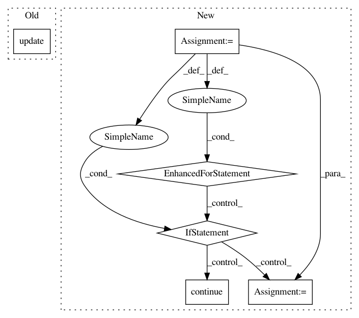

625319846c77b37a9f2a5ffcf8d3be311cd534fe,homeassistant/components/homematic.py,,_get_devices,#Any#Any#,307
Before Change
ATTR_CHANNEL: channel
}
if param is not None:
device_dict.update({ATTR_PARAM: param})
// Add new device
try:
DEVICE_SCHEMA(device_dict)
After Change
if metadata:
// Generate options for 1...n elements with 1...n params
for param, channels in metadata.items():
if param in HM_IGNORE_DISCOVERY_NODE:
continue
// add devices
_LOGGER.debug("Handling %s: %s", param, channels)
for channel in channels:
name = _create_ha_name(
name=device.NAME,
channel=channel,
param=param
)
device_dict = {
CONF_PLATFORM: "homematic",
ATTR_ADDRESS: key,
ATTR_NAME: name,
ATTR_CHANNEL: channel
}
if param is not None:
device_dict[ATTR_PARAM] = param
// Add new device
try:
DEVICE_SCHEMA(device_dict)
device_arr.append(device_dict)
except vol.MultipleInvalid as err:
_LOGGER.error("Invalid device config: %s",
str(err))
else:
_LOGGER.debug("Got no params for %s", key)
_LOGGER.debug("%s autodiscovery: %s", device_type, str(device_arr))
return device_arr
In pattern: SUPERPATTERN
Frequency: 3
Non-data size: 6
Instances
Project Name: home-assistant/home-assistant
Commit Name: 625319846c77b37a9f2a5ffcf8d3be311cd534fe
Time: 2016-10-03
Author: pascal.vizeli@syshack.ch
File Name: homeassistant/components/homematic.py
Class Name:
Method Name: _get_devices
Project Name: pantsbuild/pants
Commit Name: 3b9451ca512dcd204328c8547cdc3a1a986d8b6a
Time: 2015-02-23
Author: stuhood@gmail.com
File Name: src/python/pants/backend/jvm/tasks/ivy_resolve.py
Class Name: IvyResolve
Method Name: execute
Project Name: vatlab/SoS
Commit Name: 570dca355344924ca6c00fa4c14aa484312ae065
Time: 2017-03-04
Author: ben.bog@gmail.com
File Name: sos/sos_task.py
Class Name: TaskEngine
Method Name: run